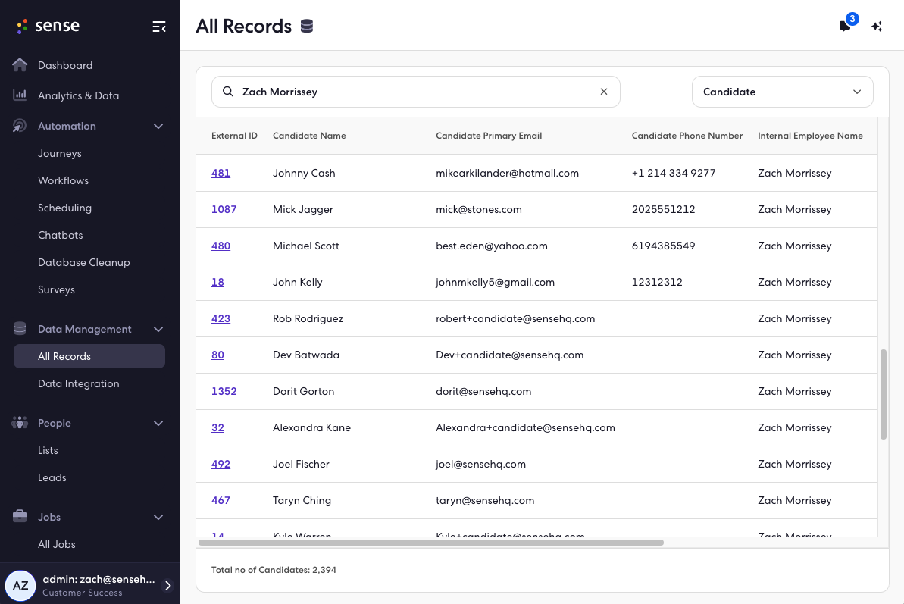

All Records — data visibility
Most impactful
Make product data discoverable and trustworthy: which entities exist, when updated, and what automation touched a record.
Result: Self-serve troubleshooting, fewer “data stale” tickets, foundation for Profile/Timeline/Debuggers.